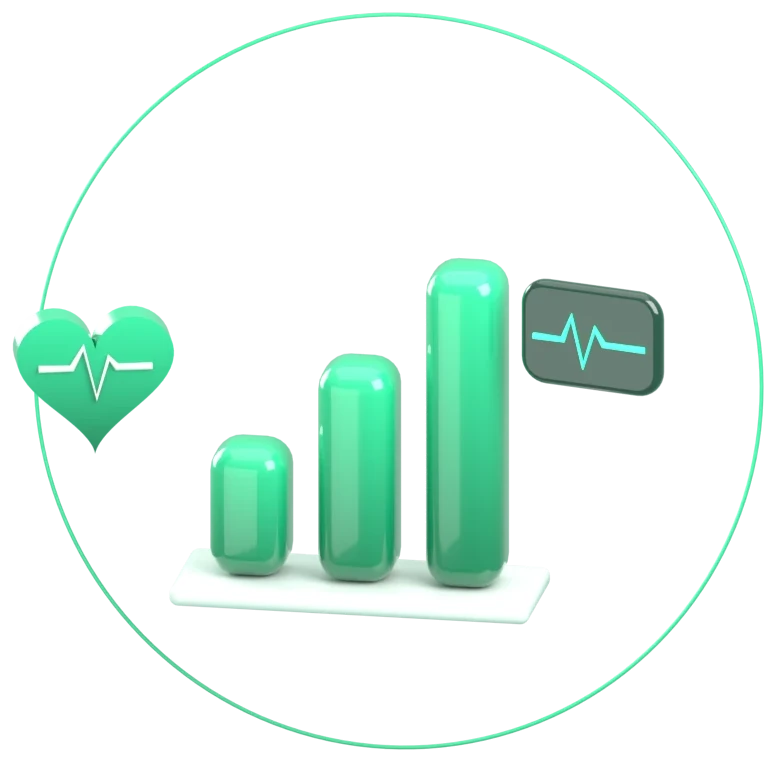
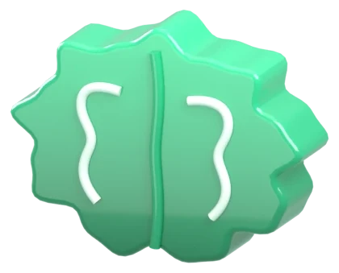
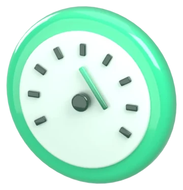
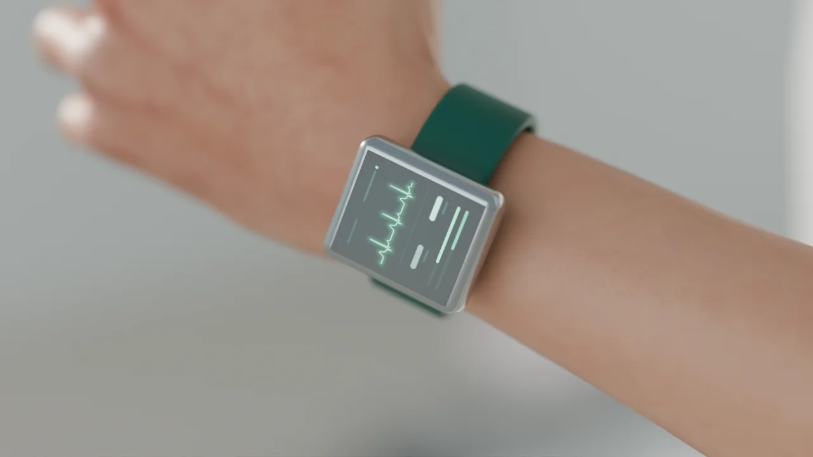
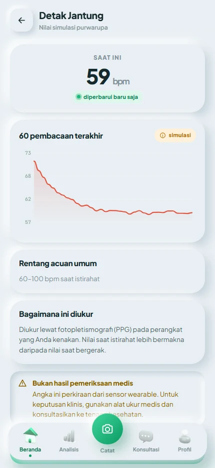
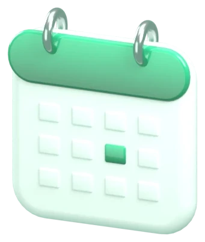
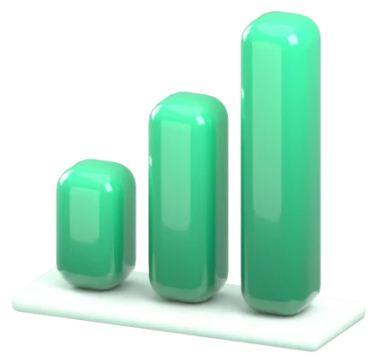

Dari purwarupa ke layanan tervalidasi.
Landasan ilmiah, rencana validasi klinis, dan jalur bisnis untuk platform telemedisin AIoT pencegah penyakit kronis.
Empat hal yang perlu diketahui.
Hipertensi & stres terdeteksi terlambat
Di Indonesia, 34,1% orang dewasa hipertensi menurut pengukuran, tetapi hanya 8,4% yang terdiagnosis. Institusi berpopulasi padat masih mengandalkan pemeriksaan berkala manual.
Pemantauan kontinu + triase + teleconsult
Wearable PPG/EKG, aplikasi empat peran, dan mesin triase yang meneruskan kasus berisiko ke dokter atau psikolog.
Purwarupa berjalan (TRL 4)
Firmware ESP32-C6 + MAX30102 berfungsi; aplikasi web live dengan 51 skenario uji otomatis lulus; chat & video call nyata.
Mitra pilot, validasi klinis, pendanaan
Satu institusi pilot, dokter & psikolog mitra, persetujuan etik, dan dana untuk validasi terhadap alat acuan.
Penyakit kronis tumbuh diam-diam.
prevalensi hipertensi penduduk >18 tahun berdasarkan pengukuran tekanan darah.
Riskesdas 2018, Kemenkes RI
yang terdiagnosis tenaga kesehatan. Selisih inilah celah deteksi yang disasar.
Riskesdas 2018, Kemenkes RI
kematian di Indonesia disebabkan penyakit tidak menular, terutama kardiovaskular.
WHO, profil PTM Indonesia
Stres kronis menaikkan tekanan darah dan mengganggu tidur, tetapi hampir tidak pernah tercatat dalam pemeriksaan rutin.

Kontinu mengalahkan berkala.
Cahaya, jantung, dan pembuluh darah.

SpO₂ — rasio dua panjang gelombang
SpO₂ ≈ a − b·R
Hukum Beer–Lambert: HbO₂ dan Hb menyerap merah (660 nm) dan inframerah (880 nm) berbeda. Koefisien a, b dikalibrasi empiris; ada koreksi bias situs pergelangan.

HRV — variabilitas antar-denyut
Selang antar-puncak PPG/EKG. RMSSD mencerminkan tonus parasimpatis; penurunannya dipakai sebagai penanda beban stres.

Tekanan darah — waktu tempuh nadi
TD ≈ α · ln(PTT) + β
Makin kaku/tertekan arteri, makin cepat gelombang nadi. α, β dikalibrasi per pengguna terhadap manset acuan.

TeleBand purwarupa.
| Mikrokontroler | ESP32-C6 (Wi-Fi 6, BLE 5) |
| Layar | LCD sentuh 1,69″ (Waveshare) |
| Sensor optik | MAX30102 — merah + IR |
| Sampling PPG | 100 Hz, FIFO 32 sampel |
| Keluaran tervalidasi internal | Detak jantung, SpO₂ |
| Eksperimental | Tensi (kalibrasi), glukosa* |
| Konektivitas | BLE → aplikasi → cloud |
* Glukosa non-invasif dari PPG belum punya dasar fisiologis tervalidasi; diperlakukan sebagai riset, tidak ditampilkan sebagai angka klinis.
Dari foton ke keputusan klinis.
Pra-proses di perangkat menekan derau dan bandwidth; tetap merekam saat luring.
Ambang bertingkat yang dapat diaudit dokter, sebelum model statistik.
Peringatan dihitung terhadap pola individu, bukan hanya ambang populasi.


Yang sudah berjalan.
Diuji terhadap alat acuan, sesuai standar.
| Parameter | Acuan | Standar / kriteria | Analisis |
|---|---|---|---|
| SpO₂ | Oksimeter klinis | ISO 80601-2-61 · Arms ≤ 4% | Bland–Altman, Arms |
| Detak jantung | EKG 12-lead | MAE ≤ 5 bpm (target internal) | MAE, korelasi Pearson |
| Tekanan darah | Sfigmomanometer tervalidasi | ISO 81060-2 · rerata ≤ 5 mmHg, SD ≤ 8 mmHg | Bland–Altman per subjek |
| Indeks stres | Kuesioner PSS-10 | Korelasi bermakna (p < 0,05) | Spearman, regresi campuran |
Studi komparatif prospektif di satu institusi pilot.
Persetujuan KEPK dan informed consent tertulis sebelum pengambilan data.
Ditetapkan lewat perhitungan daya statistik; ISO 81060-2 mensyaratkan ≥ 85 subjek untuk tensi.
Bertahap, dimulai dari stres.
Pelanggan: institusi yang bertanggung jawab atas banyak orang.

Perusahaan
Program kesehatan karyawan, K3, beban kerja & absensi.
pembeli: HR / K3

Pesantren
Asrama padat, deteksi demam & penurunan saturasi.
pembeli: pengelola / yayasan

Sekolah berasrama
Stres ujian, kualitas tidur siswa.
pembeli: sekolah / orang tua

Panti wreda
Lansia risiko kardiovaskular, alarm ke perawat.
pembeli: pengelola panti
Pintu masuk B2B2C: institusi membeli layanan, anggotanya memakai perangkat dan aplikasi, dokter mitra menangani eskalasi.

Tiga aliran pendapatan.

Sewa TeleBand/TeleRing per anggota, termasuk penggantian & perawatan.

Per anggota per bulan: dasbor faskes, triase, laporan berkala.

Porsi dari konsultasi dokter & psikolog mitra yang dipicu eskalasi.
Satu institusi pilot, 200 anggota.
| Anggota terpantau | 200 |
| Harga langganan (asumsi) | Rp35.000 / anggota / bln |
| Sewa perangkat (asumsi) | Rp25.000 / anggota / bln |
| Pendapatan bulanan | Rp12.000.000 |
| Biaya perangkat (BOM asumsi Rp450rb, 24 bln) | Rp3.750.000 / bln |
| Cloud, dukungan, kalibrasi (asumsi) | Rp3.000.000 / bln |
| Margin kontribusi | ± Rp5,25 jt/bln · 44% |
Bagi hasil teleconsult, biaya akuisisi pelanggan, dan biaya sertifikasi alat kesehatan.
Kesediaan membayar institusi, tingkat pemakaian harian, dan umur pakai perangkat.
Di antara smartwatch dan klinik.
| Pemeriksaan berkala manual | Smartwatch konsumen | Telemedisin umum | TeleCare | |
|---|---|---|---|---|
| Data kontinu | — | ✓ | — | ✓ |
| Dasbor populasi institusi | sebagian | — | — | ✓ |
| Triase & eskalasi ke dokter | manual | — | atas inisiatif pasien | otomatis |
| Vital terlampir saat konsultasi | — | — | jarang | ✓ |
| Kalibrasi terhadap alat acuan | ✓ | bervariasi | — | direncanakan |
Keunggulan TeleCare ada pada alur tertutup: pengukuran, triase, tindak lanjut klinis, dan evaluasi dalam satu platform untuk satu institusi.

Aman sebelum besar.
Yang bisa salah, dan rencananya.
| Risiko | Dampak | Mitigasi |
|---|---|---|
| Akurasi PPG turun karena gerak & warna kulit | tinggi | Kompensasi IMU, kalibrasi personal, validasi lintas kelompok |
| Estimasi tensi tidak memenuhi ISO 81060-2 | tinggi | Tetap sebagai "tren", bukan angka klinis; tensimeter terhubung sebagai acuan |
| Kepatuhan pemakaian rendah | sedang | TeleRing untuk malam hari, baterai multi-hari, pengingat |
| Beban eskalasi ke dokter | sedang | Triase bertingkat, ambang dapat disetel per unit |
| Perizinan memakan waktu | sedang | Mulai sebagai layanan wellness; jalur AKD paralel dengan validasi |
Yang kami cari.
Tim
Fajar Jelang Riyadi — ketua
Faizal Tri Widiandika — anggota
Sholeh Putra Utama — anggota
Pembimbing: Dr. Fuad Anwar, S.Si., M.Si.
Fisika · FMIPA · Universitas Sebelas Maret

Rawat lebih awal, bukan lebih lambat.
telecare-id.web.app
Masuk sebagai tamu — pilih peran pasien, dokter, atau admin faskes.